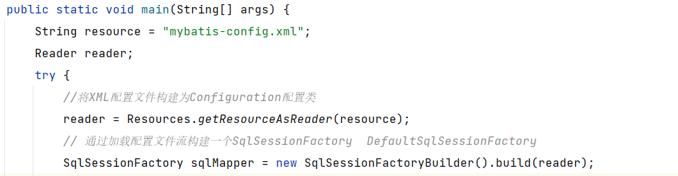

MyBatis四大对象（Executor、ParamterHandler、ResultSetHandler、StatementHandler），创建过程中都会有插件进行介入。插件利用JDK动态代理机制一层层的包装目标对象，实现在目标对象执行目标方法之前进行拦截的效果。
要点
插件：
- 实现
Interceptor接口
- 通过
@Intercepts标注插件拦截规则
- 配置文件中引用自定义插件
插件实例
插件功能
实现打印可执行sql，并记录sql方法执行时长。
编写插件
1
2
3
4
5
6
7
8
9
10
11
12
13
14
15
16
17
18
19
20
21
22
23
24
25
26
27
28
29
30
31
32
33
34
35
36
37
38
39
40
41
42
43
44
45
46
47
48
49
50
51
52
53
54
55
56
57
58
59
60
61
62
63
64
65
66
67
68
69
70
71
72
73
74
75
76
77
78
79
80
81
82
83
84
85
86
87
88
89
90
91
92
93
94
95
96
97
98
99
100
101
102
103
104
105
106
107
108
109
110
111
112
113
114
|
@Intercepts({@Signature(type = Executor.class, method = "query",
args = {MappedStatement.class, Object.class, RowBounds.class, ResultHandler.class})})
public class TestInterceptor implements Interceptor {
private static final DateFormat DATE_FORMAT = new SimpleDateFormat("yyyy-MM-dd HH:mm:ss");
@Override
public Object intercept(Invocation invocation) throws Throwable {
Object target = invocation.getTarget();
System.out.println(target.getClass());
Method method = invocation.getMethod();
System.out.println(method.getName());
Object[] args = invocation.getArgs();
System.out.println(Arrays.toString(args));
MappedStatement mappedStatement = (MappedStatement) invocation.getArgs()[0];
Object parameterObject = null;
if (invocation.getArgs().length > 1) {
parameterObject = invocation.getArgs()[1];
}
System.out.println("方法执行前操作...");
long start = System.currentTimeMillis();
Object result = invocation.proceed();
long end = System.currentTimeMillis();
System.out.println("方法执行后操作...");
String statementId = mappedStatement.getId();
BoundSql boundSql = mappedStatement.getBoundSql(parameterObject);
Configuration configuration = mappedStatement.getConfiguration();
String sql = getSql(boundSql, parameterObject, configuration);
long timing = end - start;
Object target1 = PluginUtils.realTarget(invocation.getTarget());
MetaObject metaObject = SystemMetaObject.forObject(target1);
StringBuilder formatSql = new StringBuilder()
.append(StringPool.NEWLINE)
.append("Time：").append(timing)
.append(" ms - ID：").append(statementId)
.append(StringPool.NEWLINE).append("Execute SQL：")
.append(sql)
.append(StringPool.NEWLINE);
System.out.println(formatSql.toString());
return result;
}
@Override
public Object plugin(Object target) {
return Plugin.wrap(target, this);
}
private String getSql(BoundSql boundSql, Object parameterObject, Configuration configuration) {
String sql = boundSql.getSql().replaceAll("[\\s]+", " ");
List<ParameterMapping> parameterMappings = boundSql.getParameterMappings();
TypeHandlerRegistry typeHandlerRegistry = configuration.getTypeHandlerRegistry();
if (parameterMappings != null) {
for (int i = 0; i < parameterMappings.size(); i++) {
ParameterMapping parameterMapping = parameterMappings.get(i);
if (parameterMapping.getMode() != ParameterMode.OUT) {
Object value;
String propertyName = parameterMapping.getProperty();
if (boundSql.hasAdditionalParameter(propertyName)) {
value = boundSql.getAdditionalParameter(propertyName);
} else if (parameterObject == null) {
value = null;
} else if (typeHandlerRegistry.hasTypeHandler(parameterObject.getClass())) {
value = parameterObject;
} else {
MetaObject metaObject = configuration.newMetaObject(parameterObject);
value = metaObject.getValue(propertyName);
}
sql = replacePlaceholder(sql, value);
}
}
}
return sql;
}
private String replacePlaceholder(String sql, Object propertyValue) {
String result;
if (propertyValue != null) {
if (propertyValue instanceof String) {
result = "'" + propertyValue + "'";
} else if (propertyValue instanceof Date) {
result = "'" + DATE_FORMAT.format(propertyValue) + "'";
} else {
result = propertyValue.toString();
}
} else {
result = "null";
}
return sql.replaceFirst("\\?", Matcher.quoteReplacement(result));
}
}
|
引用插件
1
2
3
| <plugins>
<plugin interceptor="com.sunfy.plugins.PerformanceInterceptor" ></plugin>
</plugins>
|
运行结果对比
引用插件之前：
引用插件之后：
插件介绍
MyBatis四大对象（Executor、ParamterHandler、ResultSetHandler、StatementHandler），创建过程中都会有插件进行介入。插件利用JDK动态代理机制一层层的包装目标对象，实现在目标对象执行目标方法之前进行拦截的效果。
默认情况下，MyBatis 允许使用插件来拦截的方法调用包括：
1
2
3
4
| 执行器Executor（update、query、commit、rollback等方法）；
参数处理器ParameterHandler（getParameterObject、setParameters方法）；
结果集处理器ResultSetHandler（handleResultSets、handleOutputParameters等方法）；
SQL语法构建器StatementHandler（prepare、parameterize、batch、update、query等方法）；
|
下面看一下MyBatis执行的时序图：
生成四大代理对象
1
2
3
4
5
6
7
8
9
10
11
12
13
14
15
16
17
18
19
20
21
22
23
24
25
26
27
28
29
30
31
32
33
34
35
36
37
38
39
40
41
42
43
44
45
46
47
48
49
50
51
52
53
54
55
56
57
58
59
60
61
62
63
64
65
66
67
68
69
70
71
72
73
74
75
76
77
78
79
80
81
82
83
84
85
86
87
88
89
90
91
| package org.apache.ibatis.session;
public class Configuration {
public ParameterHandler newParameterHandler(MappedStatement mappedStatement, Object parameterObject, BoundSql boundSql) {
ParameterHandler parameterHandler = mappedStatement.getLang().createParameterHandler(mappedStatement, parameterObject, boundSql);
parameterHandler = (ParameterHandler) interceptorChain.pluginAll(parameterHandler);
return parameterHandler;
}
public ResultSetHandler newResultSetHandler(Executor executor, MappedStatement mappedStatement, RowBounds rowBounds, ParameterHandler parameterHandler,
ResultHandler resultHandler, BoundSql boundSql) {
ResultSetHandler resultSetHandler = new DefaultResultSetHandler(executor, mappedStatement, parameterHandler, resultHandler, boundSql, rowBounds);
resultSetHandler = (ResultSetHandler) interceptorChain.pluginAll(resultSetHandler);
return resultSetHandler;
}
public StatementHandler newStatementHandler(Executor executor, MappedStatement mappedStatement, Object parameterObject, RowBounds rowBounds, ResultHandler resultHandler, BoundSql boundSql) {
StatementHandler statementHandler = new RoutingStatementHandler(executor, mappedStatement, parameterObject, rowBounds, resultHandler, boundSql);
statementHandler = (StatementHandler) interceptorChain.pluginAll(statementHandler);
return statementHandler;
}
public Executor newExecutor(Transaction transaction) {
return newExecutor(transaction, defaultExecutorType);
}
public Executor newExecutor(Transaction transaction, ExecutorType executorType) {
executorType = executorType == null ? defaultExecutorType : executorType;
executorType = executorType == null ? ExecutorType.SIMPLE : executorType;
Executor executor;
if (ExecutorType.BATCH == executorType) {
executor = new BatchExecutor(this, transaction);
} else if (ExecutorType.REUSE == executorType) {
executor = new ReuseExecutor(this, transaction);
} else {
executor = new SimpleExecutor(this, transaction);
}
if (cacheEnabled) {
executor = new CachingExecutor(executor);
}
executor = (Executor) interceptorChain.pluginAll(executor);
return executor;
}
}
|
四大对象最终都会执行方法，interceptorChain.pluginAll(statementHandler)
插件加载

org.apache.ibatis.builder.xml.XMLConfigBuilder解析xml配置文件时，加入plugins，此处解析了整个xml文件
MyBatis源码中解析pulgins的方法
插件执行过程
由于真正去执行Executor、ParameterHandler、ResultSetHandler和StatementHandler类中的方法的对象是代理对象（建议将代理对象转为class文件，反编译查看其结构，帮助理解），所以在执行方法时，首先调用的是Plugin类（实现了InvocationHandler接口）的invoke方法，如下：
首先根据执行方法所属类获取拦截器中声明需要拦截的方法集合；
判断当前方法需不需要执行拦截逻辑，需要的话，执行拦截逻辑方法（即Interceptor接口的intercept方法实现），不需要则直接执行原方法。
一般需要用户自定义实现逻辑，其中有一个重要参数，即Invocation类，通过改参数我们可以获取执行对象，执行方法，以及执行方法上的参数，从而进行各种业务逻辑实现，一般在该方法的最后一句代码都是invocation.proceed()（内部执行method.invoke方法），否则将无法执行下一个拦截器的intercept方法。
插件适用场景
分页功能
MyBatis的分页默认是基于内存分页的（查出所有，再截取），数据量大的情况下效率较低，不过使用MyBatis插件可以改变该行为，只需要拦截StatementHandler类的prepare方法，改变要执行的SQL语句为分页语句即可；
同类语句执行
一般业务系统都会有创建者，创建时间，修改者，修改时间四个字段，对于这四个字段的赋值，实际上可以在DAO层统一拦截处理，可以用MyBatis插件拦截Executor类的update方法，对相关参数进行统一赋值即可；
性能监控
对于SQL语句执行的性能监控，可以通过拦截Executor类的update, query等方法，用日志记录每个方法执行的时间；
其它
其实MyBatis扩展性还是很强的，基于插件机制，基本上可以控制SQL执行的各个阶段，如执行阶段，参数处理阶段，语法构建阶段，结果集处理阶段，具体可以根据项目业务来实现对应业务逻辑。
小结
MyBatis 只支持针对 ParameterHandler、ResultSetHandler、StatementHandler、Executor 这 4 种接口的插件， MyBatis 使用 JDK 的动态代理， 为需要拦截的接口生成代理对象以实现接口方法拦截功能， 每当执行这 4 种接口对象的方法时，就会进入拦截方法，具体就是 InvocationHandler 的 invoke() 方法， 拦截那些你指定需要拦截的方法。
编写插件： 实现 MyBatis 的 Interceptor 接口并复写 intercept()方法， 然后在给插件编写注解， 指定 要拦截哪一个接口的哪些方法即可， 在配置文件中配置编写的插件。
另外，如果配置了多个拦截器的话，会出现层层代理的情况，即代理对象代理了另外一个代理对象，形成一个代理链条，执行的时候，也是层层执行；
关于MyBatis插件涉及到的设计模式和软件思想如下：
- 设计模式：代理模式、责任链模式；
- 软件思想：AOP编程思想，降低模块间的耦合度，使业务模块更加独立；
一些注意事项：
- 不要定义过多的插件，代理嵌套过多，执行方法的时候，比较耗性能；
- 拦截器实现类的intercept方法里最后不要忘了执行
invocation.proceed()方法，否则多个拦截器情况下，执行链条会断掉；

Copyright 2021 sunfy.top ALL Rights Reserved